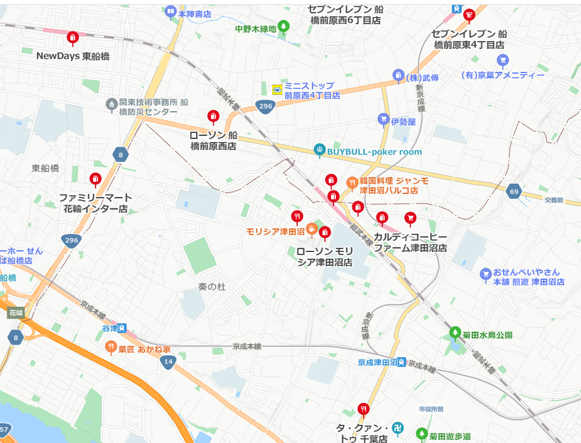
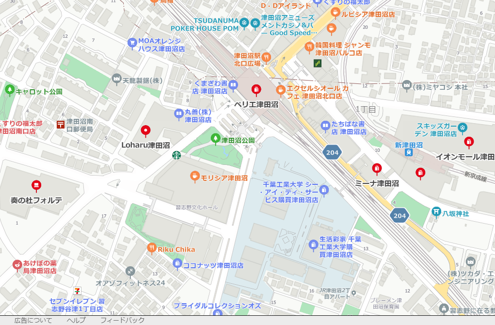

津田沼は、都心へのアクセスが良く、日々の生活に必要なショッピングセンターやコンビニが充実しています。
ここでの暮らしをより快適にするためには、便利な買い物スポットを知っておくことが大切です。
今回は、津田沼での暮らしをサポートする「コンビニ」と「ショッピングセンター」を紹介したいと思います。
駅周辺や住宅地に多くのコンビニが点在しており、24時間営業という利便性が強みであり、急ぎの買い物や夜遅くの利用に最適です。
日用品や軽食、ATMサービスなど、多様なニーズに対応しているため、忙しい日常の中で強い味方となります。
さらに、コピーや宅配便の受付、ネット通販の受け取りなど、生活をサポートする機能が充実しています。
コンビニが身近にあることで、安心感も生まれます。

津田沼には、大規模なショッピングセンターがいくつもあります。
特に、モリシア津田沼やイオンモール津田沼は、ショッピングするのに最適な場所です。
食料品や衣類、家電製品など、幅広い商品を取り揃えており、何でも揃う便利さが魅力です。
また、ショッピングセンター内にはレストランやカフェも充実しているため、買い物の合間に休憩を取ったり、友人との食事を楽しむこともできます。
週末には特別なイベントやセールも頻繁に開催されているので、いつ訪れても新しい発見があります。
津田沼のショッピングセンターは、単なる買い物の場所ではなく、暮らしを豊かにする要素も備えています。
